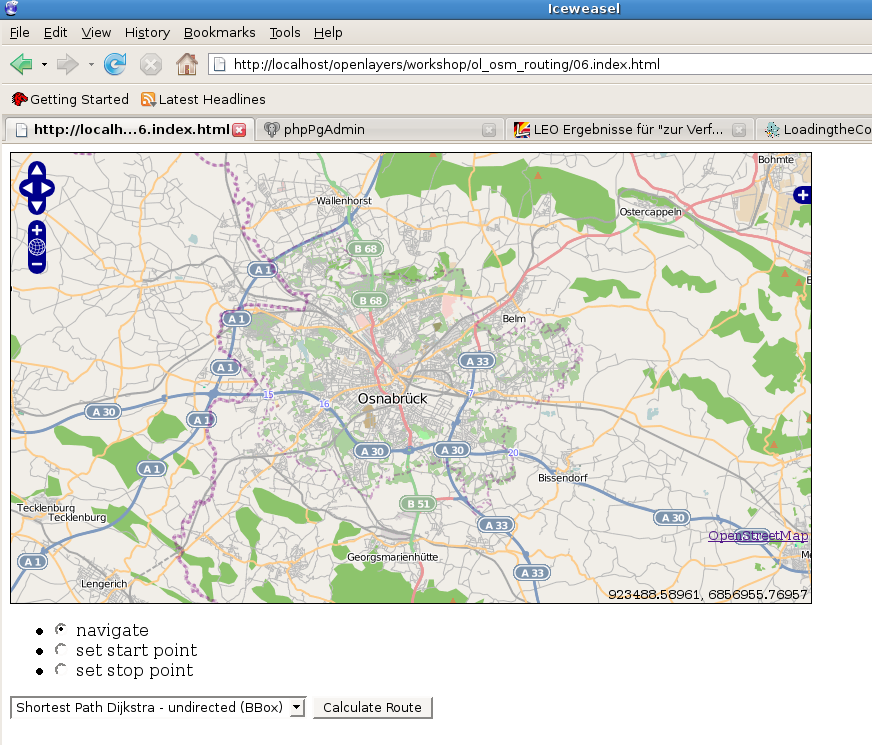

Previous topic
Getting the OpenLayers-Code for the Routing-application
Next topic
Explanation of the OpenLayers-Code step 2
Make a Donation
Links

Getting the OpenLayers-Code for the Routing-application
Explanation of the OpenLayers-Code step 2
Before you load the code you should install Firebug in your Mozilla-Firefox-Brower (on Debian the name of that browser is “Iceweasel”).
If you load the code (e.g. via http://localhost/openlayers/index.html) the following image should appear:
Ok, what happens in that code?
If you activate a radio-buttion, eg. for the startpoint
<li>
<input type="radio" name="control" value="start" id="startToggle"
onclick="toggleControl(this);" />
<label for="startToggle">set start point</label>
</li>
...the function toggleControl is activated.
That actives (or deactivates) an OpenLayers. Control-Object
controls = {
start: new OpenLayers.Control.DrawFeature(start, SinglePoint),
stop: new OpenLayers.Control.DrawFeature(stop, SinglePoint)
}
for (var key in controls) {
map.addControl(controls[key]);
}
}
function toggleControl(element) {
for (key in controls) {
if (element.value == key && element.checked) {
controls[key].activate();
} else {
controls[key].deactivate();
}
}
}
... whereas start and stop are keys in an Object Literal (https://developer.mozilla.org/En/Sandbox/Javascript_Object_Literals).
The “start” and “stop” symbols are added to the map because of the following code:
var SinglePoint = OpenLayers.Class.create();
SinglePoint.prototype = OpenLayers.Class.inherit(OpenLayers.Handler.Point, {
createFeature: function(evt) {
this.control.layer.removeFeatures(this.control.layer.features);
OpenLayers.Handler.Point.prototype.createFeature.apply(this, arguments);
}
});
start = new OpenLayers.Layer.Vector("Start point", {style: start_style});
stop = new OpenLayers.Layer.Vector("End point", {style: stop_style});
map.addLayers([mapnik, start, stop,result]);
If you can set start- end endpoint and you don`t get a failure in Firebug, everything is all right, but of course you need some more things to do for your routing.
{kind=link}